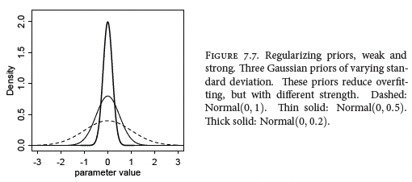
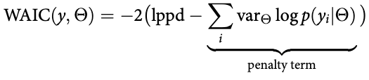
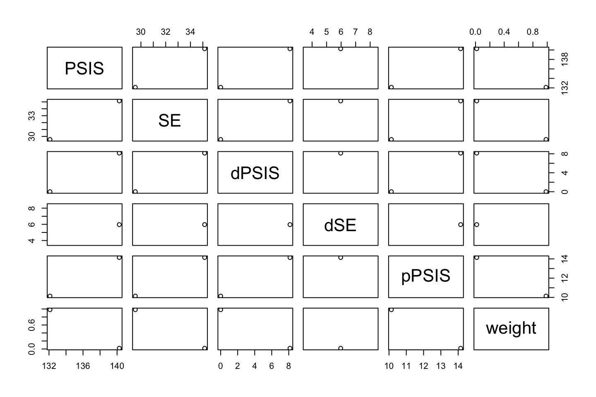

8 Chapter 7 - Model comparison
8.1 The problem with parameters
The section elaborates on overfitting and underfitting.
It introduce \(R^2\) and some reasoning for AIC and WAIC. It starts elaborating on why \(R^2\) is useless.
p-values will never be an indicator for predictive accuracy!!, what p-value does is only care about type 1 error. In general, do not pay too much attention to these.
8.2 Entropy and Accuracy
We see that entropy is able to reflect how wrong we are, instead of just measuring hit rate as accuracy does.
When we calculate the entropy of a model, we will try to minize the entropy, that is because the large the entropy, the more surprised we are of the actual outcomes. The larger the entropy the larger is q (our model) to p (the actual outcome), the distance from our model to the true model is also called the Divergence. The equation:
\[Divergence= \sum_i p_i(log(p_i) - log(q_i))\]
Divergence example: Go to the eath / mars example in the book. In its essence, we see that earth is a HIGH entropy place, as there are a lot of land and a lot of water (hence there is lots of both). When you then go to mars, you will be surprised. But the surprise going from mars to earth will be greater, as there is low entropy on mars (as almost 100% of the planet is covered in land), hence you will be very surprised going to a place with higher entropy.
The simpler model is better than complicated models, that is because simpler model has higher entropy, as they generelize more than complicated models. Where we see complicated models can be compared with mars, where it is very certain about different outcomes (typical characteristics of overfitting)
To estimate divergence for a model, we will use the log-score, this will be a distribution, this can be foind with lppd() from the rethinking package (log-pointwise-predictive-density).
\[Deviance = logscore * -2.\]
We will look at following information criteria:
- AIC
- WAIC
- PSIS
We see that deviance has the same properties as R2, thus it will not penalize for introducing more variables and also overfitting.
Then we also see that CV can make out of sample performance estimations based on testing the model on unseen data.
Notice that nonsens models can have good predictions, but their inference and causal relationships may be totally off, hence prediction and inference is two totally different ways of approaching a problem.
8.3 Golem Taming: Regularization
As we have seen in ML classes, we can regularize the model to make it harder to capture variance in the training / calibration process.
We regularize the priors, we see that we have a prior (striped) that can take on many values, while two versions of regularizations is more conservative, hence it needs more extreme data to overwhelm the priors.

8.4 Predicting predictive accuracy
We see that:
the
loofunction is a very accurate out of sample performance estimateAIC: Information criteria to approximate out of sample performance, we see that WAIC always (almost) outperforms the AIC is
WAIC: we see that lppd is the loglik that we have in the AIC.

One can use the compare() function to compare different modes, that will be done on the WAIC, and it will show the weight, hence if you have several models, it will say what weights different models should have in a prediction scenario.
pWAIC is the effective number of parameters in the model.
One must remember that the information criteria is an indication of the overfit, i.e., the model overconfidence. It should in fact never be used for model selection, as these criteria does not care about causality.
8.5 Model Comparison
8.6 Exercies
8.6.1 Medium exercises
7M3. When comparing models with an information criterion, why must all models be fit to exactly the same observations? What would happen to the information criterion values, if the models were fit to different numbers of observations? Perform some experiments, if you are not sure.
Because the information is reflecting how surprised a model is when it sees some data.
7M4. What happens to the effective number of parameters, as measured by PSIS or WAIC, as a prior becomes more concentrated? Why? Perform some experiments, if you are not sure.
We see that the effective number of parameters are decreasing, that is because you constrain the possibilities of the model, hence less flexible, i.e., less complex and therefore less effective number of parameters.
If we use WAIC() we will see a penalty term, this is representitive of the effective numbers parameters.
7M5. Provide an informal explanation of why informative priors reduce overfitting.
If we have flat priors (some without information) we will see that the model can fit to any scenario. If we impose information in the priors we can manipulate the model to not model for scenarios that are impossible or extremely unlikely.
7M6. Provide an informal explanation of why overly informative priors result in underfitting.
This is basically because we constrain the model too much. Hence when the model is fitted it needs very extreme cases to adjust the priors.
8.6.2 Hard exercises
7H1. In 2007, The Wall Street Journal published an editorial (“We’re Number One, Alas”) with a graph of corporate tax rates in 29 countries plotted against tax revenue. A badly fit curve was drawn in (reconstructed at right), seemingly by hand, to make the argument that the relationship between tax rate and tax revenue increases and then declines, such that higher tax rates can actually produce less tax revenue. I want you to actually fit a curve to these data, found in data(Laffer).Do:
- Consider models that use tax rate to predict tax revenue.
- Compare, using WAIC or PSIS, a straight-line model to any curved models you like.
- What do you conclude about the relationship between tax rate and tax revenue?
library(rethinking)
data(Laffer)
d <- Laffer
#Add vector of squared values, for the polynomial variable
d$tax_rate2 <- d$tax_rate^2
## Starndardizing ##
#' I could have standardized the tax rate
#linear model
ml <- quap(
alist(
tax_revenue ~ dnorm( mu , sigma ) ,
mu <- a + b1*tax_rate ,
a ~ dnorm( 10 , 2 ) , #mean
b1 ~ dlnorm( 0 , 1 ) , #We say that the beta can be higher and lower than 0, negative or positive effect
sigma ~ dunif( 0 , 50 )
)
,data = d
)
#quadratic model
mq <- quap(
alist(
tax_revenue ~ dnorm( mu , sigma ) ,
mu <- a + b1*tax_rate + b2*tax_rate2 ,
a ~ dnorm( 10 , 2 ) , #mean
b1 ~ dlnorm( 0 , 1 ) , #We say that the beta can be higher and lower than 0, negative or positive effect
b2 ~ dnorm( 0 , 1 ) , #We say that the beta can be higher and lower than 0, negative or positive effect
sigma ~ dunif( 0 , 50 )
)
,data = d
)WAIC(ml)
WAIC(mq)| WAIC | lppd | penalty | std_err |
|---|---|---|---|
| 126.9495 | -55.91741 | 7.55732 | 23.69986 |
| WAIC | lppd | penalty | std_err |
|---|---|---|---|
| 126.71 | -56.10766 | 7.247347 | 21.5699 |
We see that the WAIC is increasing in the more complex model, we also see the penalty is increasing, meaning that the effective number of parameters is increasing.
PSIS(ml)| PSIS | lppd | penalty | std_err |
|---|---|---|---|
| 134.145 | -67.07248 | 11.14961 | 31.13811 |
PSIS(mq)| PSIS | lppd | penalty | std_err |
|---|---|---|---|
| 132.0448 | -66.02242 | 10.01239 | 27.03682 |
Another approach can be:
compare(ml,mq,func = PSIS)
|
|
|
|
|
|
We can look at the plot to see if they can be said to be different. We see that dPSIS is the difference to the best model, and the dSE is the standard error, if the dSE is smaller than dPSIS, then we can certainly say that the given model is worse than the linear model.
The weights are the AIC weights, so if we were to predict, this is the weight that each model should have in a prediction setting.
plot(compare(ml,mq,func = PSIS))
We see the there is no statistical evidence that the more complicated model is any better than the linear model. (We look at the small gray range in the middle)
PSISk(ml)## [1] 0.37 -0.03 0.27 -0.17 -0.18 -0.12 0.23 0.15 -0.18 0.01 0.59 2.63
## [13] 0.62 0.28 -0.22 0.02 -0.21 -0.17 0.55 0.07 0.03 -0.03 0.07 0.11
## [25] 0.06 0.13 0.16 0.18 0.02We see in that one value spikes (theres is one value for each observation).
What can we conclude?
precis(ml)
precis(mq)
|
|
|
|
|
|
|
|
We see that in the linear model the intercept says that the tax return will be 2.18 if tax rate is 0. We see that the there is a positive effect from tax rate to tax return. And there is typically always a positive effect.
We see in the quadratic model that the squared values are really just 0, while a greater effect is put on the first order.